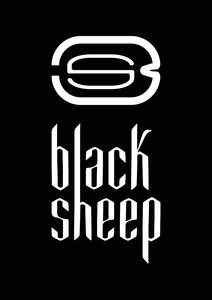

Trade Mark Journal No.2026/005 30 January 2026
UK00004310554 15 December 2025 (35,41)

- Class 35
- Advertising, marketing and promotional services; public relations services; promotion services for concerts; business management; office functions; commercial management of performing artists; business management on behalf of artists; commercial management of musicians; promotion of musical events; organisation and promotion of events for commercial and promotional purposes, including online and virtual events; booking and sales services for shows on behalf of third parties; sales services for phonographic and audiovisual productions on behalf of third parties; Franchising services; providing business assistance; Franchising services providing marketing assistance; Business assistance relating to franchising; Management advisory services related to franchising; Administration of the business affairs of franchises; Providing assistance in the field of product commercialization within the framework of a franchise contract; Providing assistance in the field of business management within the framework of a franchise contract; Services rendered by a franchisor, namely, assistance in the running or management of industrial or commercial enterprises; commercial and business consulting services; talent agency services [business management of artists]; Arranging the online buying and selling of goods and services for others; internet retail services connected with the buying and selling services for downloadable virtual products authenticated by non-fungible tokens (NFTs), i.e. virtual clothing, footwear and headwear, virtual leather goods and bags, virtual jewellery, virtual watches, virtual eyewear, virtual art; retail services, wholesale services, internet retail services and mail order services connected with the sale of clothing, footwear and headwear, leather goods and bags, jewellery, watches, eyewear.
- Class 41
- Education, training and entertainment services; entertainment services; sporting and cultural activities; organisation of entertainment events, including online and virtual events; organisation and hosting of music concerts; music production; audiovisual production; consulting in the field of music and audiovisual production; entertainment services provided by musicians and artists; online magazine, diary and blog publishing services; publication of magazines, articles and texts; publishing services; music publishing and music recordings; .
Nanzene Gerson Mavuba
Joan Sebastian Quinonez Gonzalez
Ashraf El Baia
Representative: Brand Protect Limited